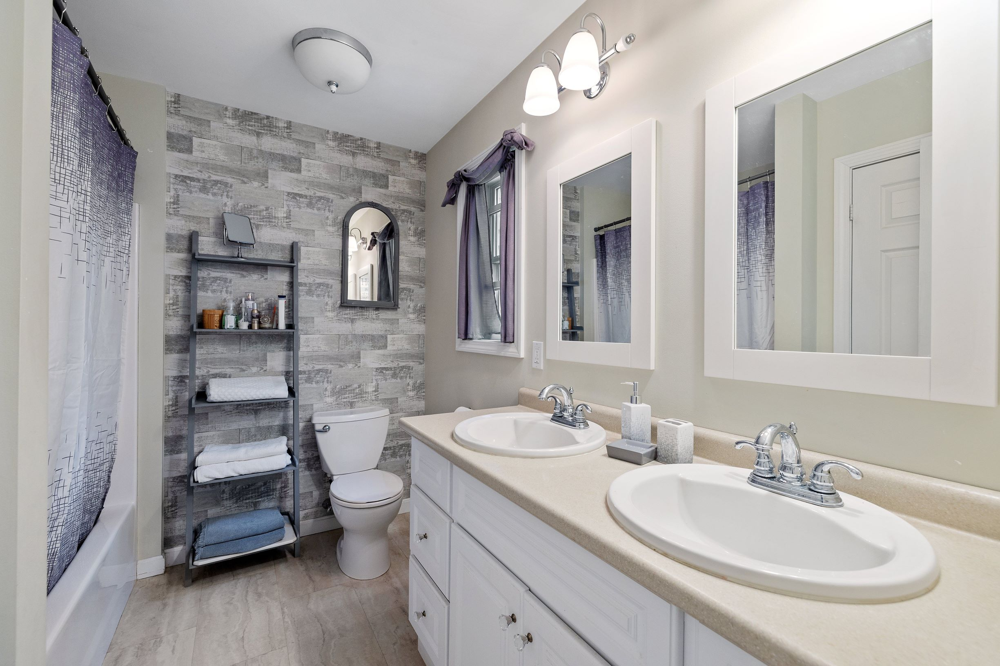
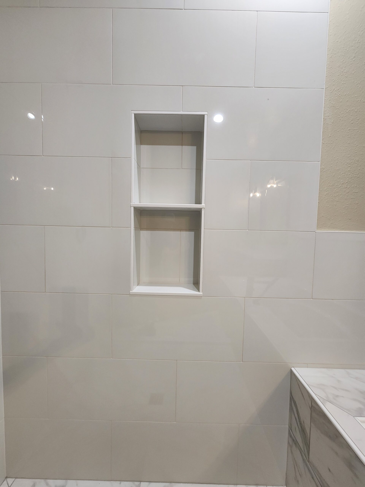
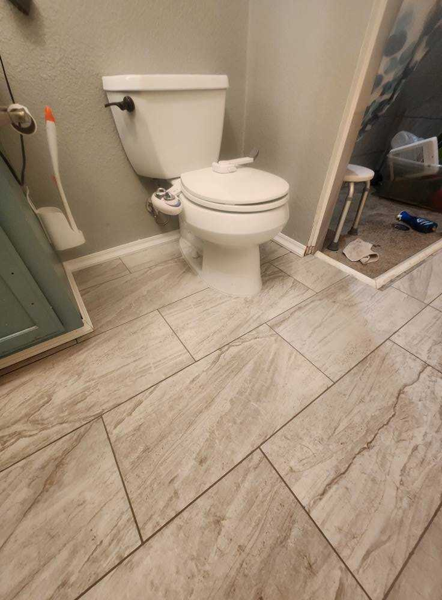
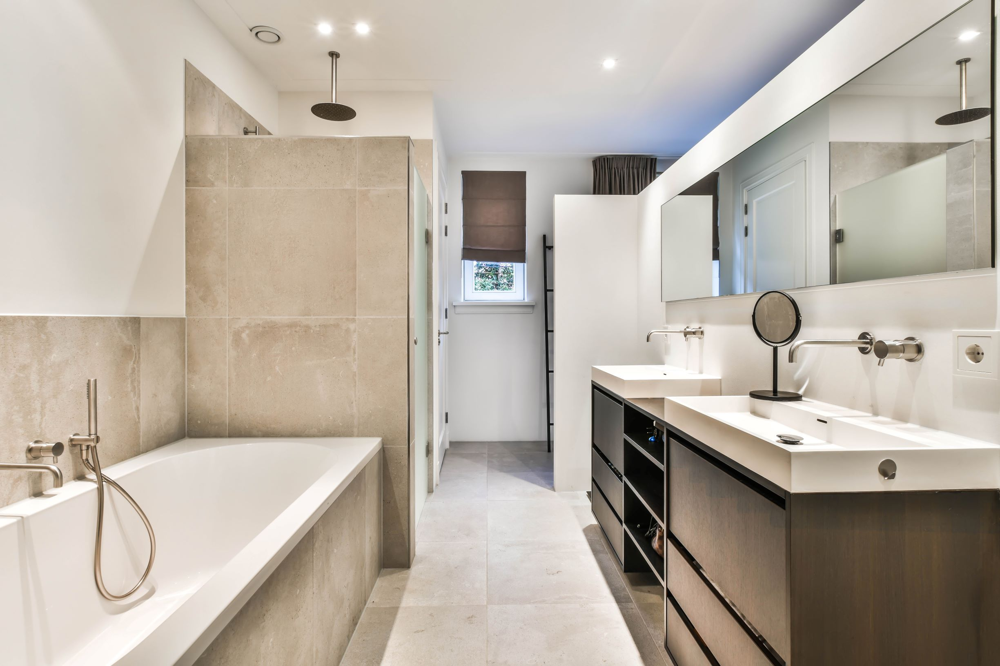

Recent Work
Bathroom Remodeling Projects
Recent bathroom work for Post Falls homeowners.





Bathroom remodels for Post Falls families — functional family bathrooms, accessible upgrades, and master suite transformations.
Bathrooms in Post Falls homes have to handle a lot of life. Family bathrooms see kids morning and night. Master suites need to feel like a retreat at the end of a long day. Guest bathrooms host visitors who deserve a thoughtful first impression. The bathrooms in homes built between 1990 and 2010 — which describes most of Post Falls's housing stock — often fall short on all three.
DCB Construction LLC remodels bathrooms across Post Falls with a focus on the practical features families actually use: durable tile floors that handle wet feet from the shower, walk-in showers that take less daily maintenance than tubs, double vanities that prevent morning bottlenecks, and storage solutions that keep counters clear.
Recent bathroom work for Post Falls homeowners.




Post Falls's growth over the past two decades means most homes here are 15 to 30 years old — the age where original bathrooms start to need real updates rather than cosmetic ones. Tubs that no one uses are getting replaced with walk-in showers. Builder-grade vanities are being upgraded to custom cabinetry with quartz tops. Tile work that was state-of-the-art in 2002 is being redone with modern large-format porcelain and natural stone.
We work with homeowners across Post Falls neighborhoods including Riverbend, Greensferry, the Chase area, and the newer subdivisions on the north side. Each project gets the same approach: thorough planning up front, professional waterproofing during construction, and finish work that holds up.
Looking for a different remodel? See our other Post Falls services: kitchen remodeling in Post Falls, or visit our Post Falls area page for the full picture.
Bathroom remodels in Post Falls typically range from $15,000 to $40,000. A simpler update with new fixtures and a vanity swap may run lower, while a full master bath with walk-in shower and custom tile runs toward the higher end. We provide a detailed estimate at no cost so you can plan around real numbers.
Yes — this is one of the most common requests we get from Post Falls homeowners. We remove the existing tub, build out the new shower with proper waterproofing, install custom tile or large-format panels, and add features like benches, niches, or grab bars based on what you need. Most tub-to-shower conversions take 2 to 3 weeks.
Yes. We regularly install curbless walk-in showers, grab bars, comfort-height toilets, wider doorways, and non-slip flooring for homeowners planning ahead for aging in place. Accessibility upgrades can be done as a single project or phased in alongside cosmetic updates.
We always inspect the subfloor, wall framing, and surrounding areas during demolition. If we find mold, rot, or water damage from old plumbing leaks — which is common in Post Falls homes from the 90s and early 2000s — we address it before continuing the build. Replacing damaged framing and installing modern waterproofing is the only way to make sure the new bathroom doesn't have the same problem.